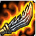

鬼索的狂暴之刃
简介
听名字就很是霸气，看图标也和关公刀特别像，感觉厉害的不行对不对？。
使用方法
实际上性价比很低，在我的印象中只有两个英雄需要出这件装备，一个是武器大师贾克斯，一个是审判天使凯尔，因为他们的技能和普通攻击大多是混合伤害，配合鬼刀是非常合适的。但是现在不要说出鬼刀的人，你连贾克斯都很难见到，即使见到了也是三相兰顿走起，谁还出这件装备。但是我觉得这件装备被动还是挺OP的，第一个被动增加自身的攻速和法强，越战越勇。还有一个唯一被动当你血量低于一半时，会提供额外的20%攻击速度、10%生命偷取一级10%法术吸血，举个例子残血天使有了鬼刀之后能够拥有非常快的攻击速度，配合吸血效果能够很快的回复自身血量。但是在坦克联盟版本中，贾克斯和天使都已经很少出现在召唤师峡谷了，更不要说鬼刀这件装备了。俗话说的好，一代补丁一代神，鬼刀后面亦无人。